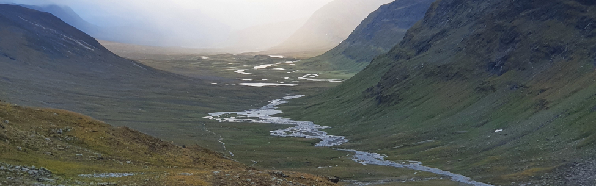

Haftung für Inhalte
Alle Inhalte meines Internetauftritts wurden mit größter Sorgfalt und nach bestem Gewissen erstellt. Für die Richtigkeit, Vollständigkeit und Aktualität der Inhalte kann ich jedoch keine Gewähr übernehmen. Als Diensteanbieter bin ich gemäß § 7 Abs.1 TMG für eigene Inhalte auf diesen Seiten nach den allgemeinen Gesetzen verantwortlich. Nach §§ 8 bis 10 TMG bin ich als Diensteanbieter jedoch nicht verpflichtet, übermittelte oder gespeicherte fremde Informationen zu überwachen oder nach Umständen zu forschen, die auf eine rechtswidrige Tätigkeit hinweisen. Verpflichtungen zur Entfernung oder Sperrung der Nutzung von Informationen nach den allgemeinen Gesetzen bleiben hiervon unberührt.Eine diesbezügliche Haftung ist jedoch erst ab dem Zeitpunkt der Kenntniserlangung einer konkreten Rechtsverletzung möglich. Bei Bekanntwerden von den o.g. Rechtsverletzungen werde ich diese Inhalte unverzüglich entfernen.
Haftungsbeschränkung für externe Links
Meine Webseite enthält Links auf externe Webseiten Dritter. Auf die Inhalte dieser direkt oder indirekt verlinkten Webseiten habe ich keinen Einfluss. Daher kann ich für die „externen Links“ auch keine Gewähr auf Richtigkeit der Inhalte übernehmen. Für die Inhalte der externen Links sind die jeweiligen Anbieter oder Betreiber (Urheber) der Seiten verantwortlich. Die externen Links wurden zum Zeitpunkt der Linksetzung auf eventuelle Rechtsverstöße überprüft und waren im Zeitpunkt der Linksetzung frei von rechtswidrigen Inhalten. Eine ständige inhaltliche Überprüfung der externen Links ist ohne konkrete Anhaltspunkte einer Rechtsverletzung nicht möglich. Bei direkten oder indirekten Verlinkungen auf die Webseiten Dritter, die außerhalb meines Verantwortungsbereichs liegen, würde eine Haftungsverpflichtung ausschließlich in dem Fall nur bestehen, wenn ich von den Inhalten Kenntnis erlangen und es mir technisch möglich und zumutbar wäre, die Nutzung im Falle rechtswidriger Inhalte zu verhindern. Diese Haftungsausschlusserklärung gilt auch innerhalb des eigenen Internetauftrittes „www.philippstassen.com“ gesetzten Links und Verweise von Fragestellern, Blogeinträgern, Gästen des Diskussionsforums. Für illegale, fehlerhafte oder unvollständige Inhalte und insbesondere für Schäden, die aus der Nutzung oder Nichtnutzung solcherart dargestellten Informationen entstehen, haftet allein der Diensteanbieter der Seite, auf welche verwiesen wurde, nicht derjenige, der über Links auf die jeweilige Veröffentlichung lediglich verweist. Werden mir Rechtsverletzungen bekannt, werden die externen Links durch mich unverzüglich entfernt.
Urheberrecht
Die auf meiner Webseite veröffentlichen Inhalte und Werke unterliegen dem deutschen Urheberrecht. Die Vervielfältigung, Bearbeitung, Verbreitung und jede Art der Verwertung des geistigen Eigentums in ideeller und materieller Sicht des Urhebers außerhalb der Grenzen des Urheberrechtes bedürfen der vorherigen schriftlichen Zustimmung des jeweiligen Urhebers i.S.d. Urhebergesetzes (http://www.gesetze-im-internet.de/bundesrecht/urhg/gesamt.pdf). Downloads und Kopien dieser Seite sind nur für den privaten und nicht kommerziellen Gebrauch erlaubt. Sind die Inhalte auf unserer Webseite nicht von mir erstellt wurden, sind die Urheberrechte Dritter zu beachten. Die Inhalte Dritter werden als solche kenntlich gemacht. Sollten Sie trotzdem auf eine Urheberrechtsverletzung aufmerksam werden, bitte ich um einen entsprechenden Hinweis. Bei Bekanntwerden von Rechtsverletzungen werde ich derartige Inhalte unverzüglich entfernen.